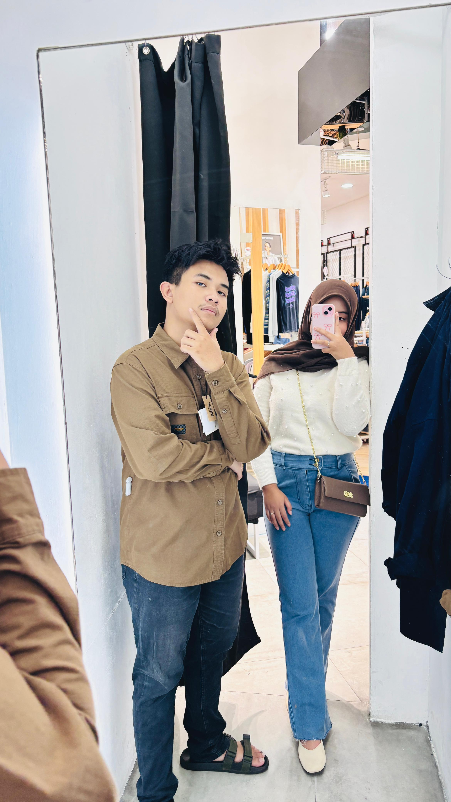
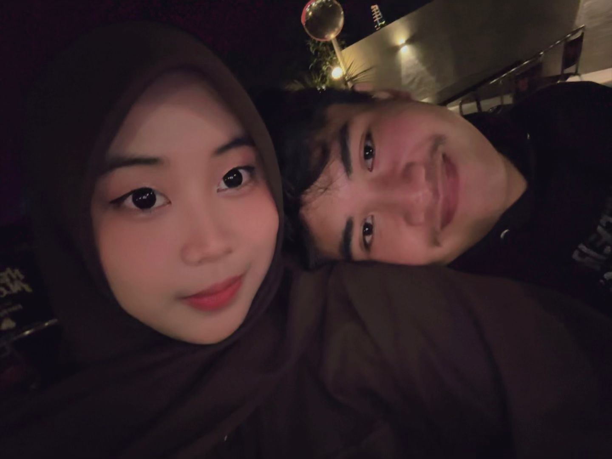
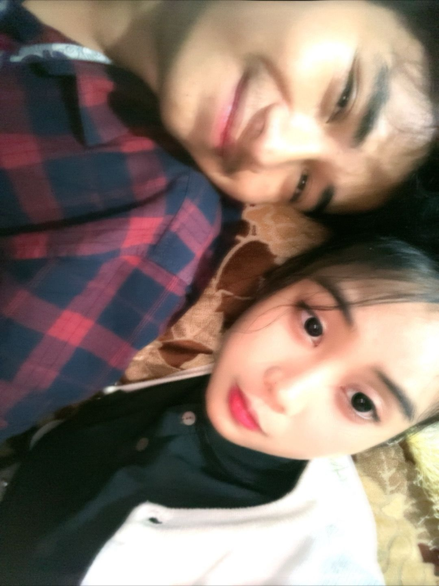

Bintang-bintang kecil meletus lembut di langit. Di bawahnya, tiga foto. ❤︎

Ini Waktu Adek Nemenin Mas Cari Celana sama Beli Jaket Yang Bagus Itu

Ini Foto Udah Lumayan Lama Jadi Mas Lupa Hehe

Ini Adek Cantik Banget Ga Boong
“Terima kasih sudah jadi bintang paling terang di langitku.”